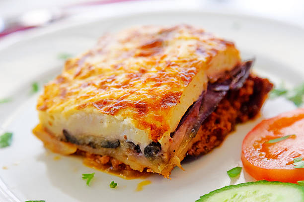

Moussaka

Decription
Moussaka is a greek dish similar to a lasagna. It is layers of meat in tomato sauce, egg plant
and bechamel sauce. Instead of a pasta plate however, moussaka uses potato as the the last
layer to hold in the bechamel and tomato sauce.
Ingredients
- 3 egg plants, peeled and cut lengthwise into 1/2 inch thick slices
- 1/4 cup olive oil
- 1 tablespoon butter
- 1 pound ground beef
- 2 onions, chopped
- 1 clove garlic, minced
- 2 tablespoon dried parley
- 1/4 teaspoon ground cinnamon
- 1/2 teaspoon ground nutmeg, divided
- 1 can (8 ounce) tomato sauce
- 1/2 cup red wine
- 1 egg, beaten
- 4 cups milk
- 1/2 cup butter
- 6 tablespoons all-purpose flour
- 1 1/2 cups freshly grated Parmesan cheese
- salt, black and white pepper, to taste
Cooking steps
- Lay eggplant slices on paper towels; springkle lightly with salt. Let sit for 30 minutes to draw out moisture, then pat dry with paper towels.
- Warm olive oil in a skillet over high heat. Fry eggplant until browned, 2-3 minutes per side. Drain on paper towels, then set aside.
- Melt 1 tablespoon butter in a large skillet over medium heat. Stir in ground beef, onions and garlic; season with salt and pepper. Cook until beef is browned (8 minutes) then
add parlsey, cinnamon and 1/4 teaspoon nutmeg. Pour in tomato sauce and wine; mix well. Simmer for 20 minutes. Allow to cool then stir in beaten egg.
- Scald milk in a saucepan over medium heat.
- At the same time, melt 1/2 cup butter in large skillet over medium heat. Whisk flour into butter until smooth. On lower heat, gradually pour in scalded milk, whisking constantly
until it thickens. Season bechamel sauce with salt and white pepper.
- Preheat oven to 350 degrees F (175 degrees C). Grease a 9x13 inch baking dish.
- Arrange a single layer of eggplant in the prepared baking dish. Cover eggplant with meat suce, then sprinkle some parmesan cheese. Cover with remaining eggplant and sprinkle permsan cheese.
Pour bechamel sauce on top and sprinkle with remaining 1/4 teaspoon nutmet. Cover remaining with cheese.
- Bake in preheated oven until bubbly and browned, about 1 hour.